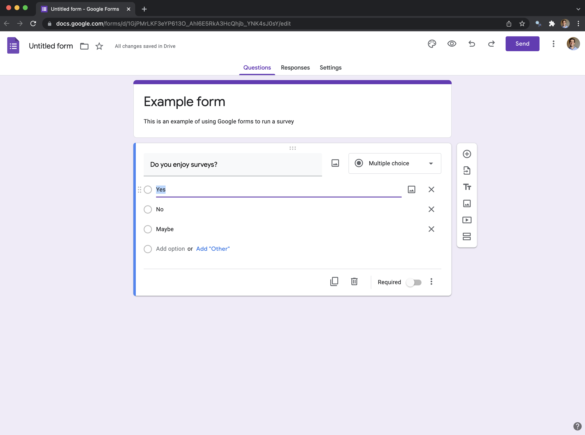
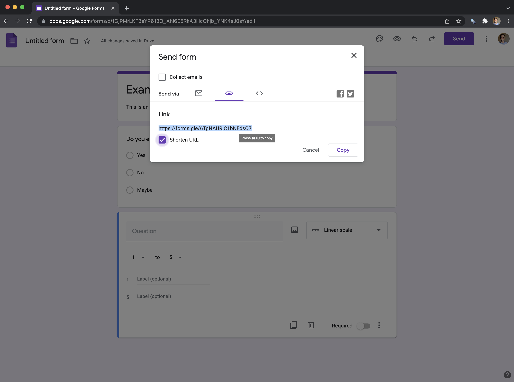

Ronald Fisher, the twentieth century statistician, and Francis Galton, the nineteenth century statistician, are the intellectual grandfathers of much of the work that we cover in this chapter. In some cases it is directly their work, in other cases it is work that built on their contributions. Both men believed in eugenics, amongst other things that are generally reprehensible. In the same way that art history must acknowledge, say Caravaggio as a murderer, while also considering his work and influence, so to must statistics and the data sciences more generally concern themselves with this past, at the same time as we try to build a better future.
This chapter is about experiments. This is a situation in which we can explicitly control and vary that which we are interested in. The advantage of this is that identification should be clear. There is a treatment group that is subject to that which we are interested in, and a control group that is not. These are randomly split before treatment. And so, if they end up different then it must be because of the treatment. Unfortunately, life is rarely so smooth. Arguing about how similar the treatment and control groups were tends to carry on indefinitely. Our ability to speak to whether we have measured the effect of the treatment, affects our ability to speak to what effect that treatment could have.
In this chapter we cover experiments, especially constructing treatment and control groups, and appropriately considering their results. We discuss some aspects of ethical behaviour in experiments through reference to the abhorrent Tuskegee Syphilis Study and ECMO. And we go through the Oregon Health Insurance Experiment as a case study. We then turn to A/B testing, which is extensively used in industry, and consider a case study based on Upworthy data. Finally, we go through actually implementing a survey using Google Forms.
10.1.2 Motivation and notation
Professional sports are a big deal in North America. Consider the situation of someone who moves to San Francisco in 2014, such that as soon as they moved the Giants win the World Series and the Golden State Warriors begin a historic streak of World Championships. They move to Chicago, and immediately the Cubs win the World Series for the first time in a hundred years. They move to Massachusetts, where the Patriots win the Super Bowl again, and again, and again. And finally, they move to Toronto, where the Raptors immediately win the World Championship. Should a city pay them to move, or could municipal funds be better spent elsewhere?
One way to get at the answer would be to run an experiment. Make a list of the North American cities with major sports teams, and then roll a dice and send them to live there for a year. With enough lifetimes, we could work it out. The fundamental issue is that we cannot both live in a city and not live in a city. This is the fundamental problem of causal inference: a person cannot be both treated and untreated. Experiments and randomized controlled trials are circumstances in which we try to randomly allocate some treatment, to have a belief that everything else was the same (or at least ignorable). The framework that we use to formalize the situation is the Neyman-Rubin model (Holland 1986).
Shoulders of giants
Donald B. Rubin
A treatment, \(t\), will often be a binary variable that is either 0 or 1. It is 0 if the person, \(i\), is not treated, which is to say they are in the control group, and 1 if they are treated. We will typically have some outcome, \(Y_i\), of interest for that person, and that could be binary, multinomial, or continuous. For instance, it could be vote choice, in which case we could measure whether the person is: ‘Conservative’ or ‘Not Conservative’; which party they support, say: ‘Conservative’, ‘Liberal’, ‘Democratic’, ‘Green’; or maybe a probability of support.
A treatment is causal if \((Y_i|t=0) \neq (Y_i|t=1)\). That is to say, that the outcome for person \(i\), given they were not treated, is different to their outcome given they were treated. If we could both treat and control the one individual at the one time, then we would know that it was only the treatment that had caused any change in outcome, as there is no other factor that could explain it. But the fundamental problem of causal inference is that we cannot both treat and control the one individual at the one time. So when we want to know the effect of the treatment, we need to compare it with a counterfactual. The counterfactual is what would have happened if the individual were not treated. As it turns out, this means one way to think of causal inference is as a missing data problem, where we are missing the counterfactual.
As we cannot compared treatment and control in one individual, we instead compare the average of two groups—all those treated and all those not. We are looking to estimate the counterfactual at a group level because of the impossibility of doing it at an individual level. Making this trade-off allows us to move forward but comes at the cost of certainty. We must instead rely on randomization, probabilities, and expectations.
We usually consider a default of there being no effect and we look for evidence that would cause us to change our mind. As we are interested in what is happening in groups, we turn to expectations, and notions of probability to express ourselves. Hence, we will make claims that talk, on average. Maybe wearing fun socks really does make you have a lucky day, but on average, across the group, it is probably not the case.
It is worth pointing out that we do not just have to be interested in the average effect. We may consider the median, or variance, or whatever. Nonetheless, if we were interested in the average effect, then one way to proceed would be to:
divide the dataset into two—treated and not treated—and have a binary effect column;
sum the column, then divide it by the length of the column; and
then look at the ratio.
This is an estimator, touched on in Chapter @ref(on-writing), which is a way of putting together a guess of something of interest. The estimand is the thing of interest, in this case the average effect, and the estimate is whatever our guess turns out to be. We can simulate data to illustrate the situation.
More broadly, to tell causal stories we need to bring together both theory and a detailed knowledge of what we are interested in (Cunningham 2021, 4). In Chapter @ref(gather-data) we discussed gathering data that we observed about the world. In this chapter we are going to be more active about turning the world into the data that we need. As the researcher we will decide what to measure and how, and we will need to define what we are interested in and what we are not. We will be active participants in the data generating process. That is, if we want to use this data, then as researchers we must go out and hunt it, if you like.
10.1.3 Randomization
Correlation can be enough in some settings, but in order to be able to make forecasts when things change, and the circumstances are slightly different we need to understand causation. The key is the counterfactual: what would have happened in the absence of the treatment. Ideally, we could keep everything else constant, randomly divide the world into two groups, and treat one and not the other. Then we can be pretty confident that any difference between the two groups is due to that treatment. The reason for this is that if we have some population and we randomly select two groups from it, then our two groups (provided they are both big enough) should have the same characteristics as the population. Randomized controlled trials (RCTs) and A/B testing attempt to get us as close to this ‘gold standard’ as we can hope. When we, and others such as Athey and Imbens (2017), use language like gold standard to refer to these approaches, we do not mean to imply that they are perfect. Just that they can be better than most of the other options.
What we hope to be able to do is to find treatment and control groups that are the same, but for the treatment. This means that establishing the control group is critical because when we do that, we establish the counterfactual. We might be worried about, say, underlying trends, which is one issue with a before-and-after comparison, or selection bias, which could occur when we allow self-selection. Either of these issues could result in biased estimators. We use randomization to go some way to addressing these.
To get started, we simulate a population, and then randomly sample from it. We will set it up so that half the population likes blue, and the other half likes white. And further, if someone likes blue then they almost surely prefer dogs, but if they like white then they almost surely prefer cats. The approach of heavily using simulation is a critical part of the workflow advocated in this book. This is because we know roughly what the outcomes should be from the analysis of simulated data. Whereas if we go straight to analyzing the real data then we do not know if unexpected outcomes are due to our own analysis errors, or actual results. Another good reason it is useful to take this approach of simulation is that when you are working in teams the analysis can get started before the data collection and cleaning is completed. That simulation will also help the collection and cleaning team think about tests they should run on their data.
# A tibble: 5,000 × 3
person favorite_color prefers_dogs_to_cats
<int> <chr> <chr>
1 1 Blue Yes
2 2 White No
3 3 White No
4 4 Blue Yes
5 5 Blue Yes
6 6 Blue Yes
7 7 Blue Yes
8 8 Blue Yes
9 9 White No
10 10 White No
# … with 4,990 more rows
population |>group_by(favorite_color) |>count()
# A tibble: 2 × 2
# Groups: favorite_color [2]
favorite_color n
<chr> <int>
1 Blue 2547
2 White 2453
We will now construct a frame, assuming that we have a frame that contains 80 per cent of the population.
When we look at the mean for the two groups, we can see that the proportions that prefer blue or white are very similar to what we specified (?tbl-bluetowhite).
Proportion of the treatment and control group that prefer blue or white
Group
Preferred color
Number
Proportion
Control
Blue
987
0.50
Control
White
997
0.50
Treatment
Blue
1036
0.51
Treatment
White
983
0.49
We randomized based on favorite color. But we should also find that we took dog or cat preferences along at the same time and will have a ‘representative’ share of people who prefer dogs to cats. Why should that happen when we have not randomized on these variables? Let’s start by looking at our dataset (Table 10.1).
sample |>left_join(frame |>select(person, prefers_dogs_to_cats), by ="person") |>group_by(group, prefers_dogs_to_cats) |>count() |>ungroup() |>group_by(group) |>mutate(prop = n /sum(n)) |> knitr::kable(col.names =c("Group", "Prefers dogs to cats", "Number", "Proportion"),digits =2,booktabs =TRUE,linesep ="" )
Table 10.1: Proportion of the treatment and control group that prefer dogs or cats
Group
Prefers dogs to cats
Number
Proportion
Control
No
997
0.50
Control
Yes
987
0.50
Treatment
No
983
0.49
Treatment
Yes
1036
0.51
It is exciting to have a representative share on ‘unobservables’. In this case, we do ‘observe’ them—to illustrate the point—but we did not select on them. We get this because the variables were correlated. But it will break down in several ways that we will discuss. It also assumes large enough groups. For instance, if we considered specific dog breeds, instead of dogs as an entity, we may not find ourselves in this situation. To check that the two groups are the same we look to see if we can identify a difference between the two groups based on observables. In this case we looked at the mean, but we could look at other aspects as well.
This all brings us to Analysis of Variation (ANOVA). ANOVA was introduced by Fisher while he was working on statistical problems in agriculture. This is less unexpected than it may seem as historically agricultural research has been closely tied to statistical innovation. We mention ANOVA here because of its importance historically, but it is a variant of linear regression which we cover in some detail in Chapter @ref(ijalm). Further, in general, we would usually not use ANOVA day-to-day. There is nothing wrong with it in the right circumstances. But it is more than a hundred years old and the number of modern use-case where it is the best option is small.
In any case, we approach ANOVA with the expectation that the groups are from the same distribution and could conduct it using aov(). In this case, we would fail to reject our default hypothesis that the samples are the same.
10.1.4 Treatment and control
If the treated and control groups are the same in all ways and remain that way, but for the treatment, then we have internal validity, which is to say that our control will work as a counterfactual and our results can speak to a difference between the groups in that study. Internal validity means that our estimates of the effect of the treatment are speaking to the treatment and not some other aspect. They mean that we can use our results to make claims about what happened in the experiment.
If the group to which we applied our randomization were representative of the broader population, and the experimental set-up were fairly similar to outside conditions, then we further could have external validity. That would mean that the difference we find does not just apply in our own experiment, but also in the broader population. External validity means that we can use our experiment to make claims about what would happen outside the experiment. It is randomization that has allowed that to happen.
But this means we need randomization twice. Firstly, into the group that was subject to the experiment, and then secondly, between treatment and control. How do we think about this randomization, and to what extent does it matter?
We are interested in the effect of being treated. It may be that we charge different prices, which would be a continuous treatment variable, or that we compare different colors on a website, which would be a discrete treatment variable. Either way, we need to make sure that all the groups are otherwise the same. How can we be convinced of this? One way is to ignore the treatment variable and to examine all other variables, looking for whether we can detect a difference between the groups based on any other variables. For instance, if we are conducting an experiment on a website, then are the groups roughly similar in terms of, say:
Microsoft and Apple users?
Safari, Chrome, and Firefox users?
Mobile and desktop users?
Users from certain locations?
Further, are the groups representative of the broader population? These are all threats to the validity of our claims.
But if done properly, that is if the treatment is truly independent, then we can estimate the average treatment effect (ATE). In a binary treatment variable setting this is:
That is, the difference between the treated group, \(t = 1\), and the control group, \(t = 0\), when measured by the expected value of the outcome, \(Y\). The ATE becomes the difference between the two expectations.
To illustrate this concept, we first simulate some data that shows a difference of one between the treatment and control groups.
set.seed(853)ate_example <-tibble(person =c(1:1000),was_treated =sample(x =c("Yes", "No"),size =1000,replace =TRUE ))# Make outcome a bit more likely if treated.ate_example <- ate_example |>rowwise() |>mutate(outcome =if_else( was_treated =="No",rnorm(n =1, mean =5, sd =1),rnorm(n =1, mean =6, sd =1) ))
We can see the difference, which we simulated to be one, between the two groups in Figure (Figure 10.1). And we can compute the average between the groups and then the difference to see also that we get back the result that we put in (Table 10.2).
ate_example |>ggplot(aes(x = outcome,fill = was_treated)) +geom_histogram(position ="dodge",binwidth =0.2) +theme_minimal() +labs(x ="Outcome",y ="Number of people",fill ="Person was treated") +scale_fill_brewer(palette ="Set1")
Figure 10.1: Simulated data showing a difference between the treatment and control group
ate_example |>group_by(was_treated) |>summarize(mean =mean(outcome)) |>pivot_wider(names_from = was_treated, values_from = mean) |>mutate(difference = Yes - No) |> knitr::kable(col.names =c("Average for treated", "Average for not treated", "Difference"),digits =2,booktabs =TRUE,linesep ="" )
Table 10.2: Average difference between the treatment and control groups for data simulated to have an average difference of one
Average for treated
Average for not treated
Difference
5
6.06
1.06
Unfortunately, there is often a difference between simulated data and reality. For instance, an experiment cannot run for too long otherwise people may be treated many times, or become inured to the treatment; but it cannot be too short otherwise we cannot measure longer term outcomes. We cannot have a ‘representative’ sample across every facet of a population, but if not, then the treatment and control will be different. Practical difficulties may make it difficult to follow up with certain groups and so we end up with a biased collection. Some questions to explore when working with real experimental data include:
How are the participants being selected into the frame for consideration?
How are they being selected for treatment? We would hope this is being done randomly, but this term is applied to a variety of situations. Additionally, early ‘success’ can lead to pressure to treat everyone, especially in medical settings.
How is treatment being assessed?
To what extent is random allocation ethical and fair? Some argue that shortages mean it is reasonable to randomly allocate, but that may depend on how linear the benefits are. It may also be difficult to establish definitions, and the power imbalance between those making these decisions and those being treated should be considered.
Bias and other issues are not the end of the world. But we need to think about them carefully. In a well-known example, Abraham Wald, the twentieth century Hungarian mathematician, was given data on the planes that came back to Britain after being shot at in WW2. The question was where to place the armor. One option was to place it over the bullet holes. Wald recognized that there is a selection effect here—these are the planes that made it back to be examined—so those holes did not necessarily need the armor. Arguably armor would be better placed where there were no bullet holes.
For instance, how would the results of a survey about the difficulty of a university course differ if only students who completed the course were surveyed, and not those who dropped out? While we should work to try to make our dataset as good as possible, it may be possible to use the model to control for some of the bias. For instance, if there was a variable that was correlated with say, attrition, then it could be added to the model either by-itself, or as an interaction. Similarly, if there was correlation between the individuals. For instance, if there was some ‘hidden variable’ that we did not know about that meant some individuals were correlated, then we could use ‘wider’ standard errors. This needs to be done carefully and we discuss this further in Chapter @ref(causality). That said, if such issues can be anticipated, then it can be better to change the experiment. For instance, perhaps it would be possibly to stratify by that hidden variable.
10.1.5 Fisher’s tea party
Fisher introduced an experiment designed to see if a person can distinguish between a cup of tea where the milk was added first, or last. We begin by preparing eight cups of tea: four with milk added first and the other four with milk added last. We then randomize the order of all eight cups. We tell the taster, whom we will call ‘Ian’, about the experimental set-up: there are eight cups of tea, four of each type, he will be given cups of tea in a random order, and the task is to group them into two groups.
One of the nice aspects of this experiment is that we can do it ourselves. There are a few things to be careful of in practice, including that: the quantities of milk and tea and consistent; the groups are marked in some way that the taster cannot see; and the order is randomized.
Another nice aspect of this experiment is that we can calculate the chance that Ian is able to randomly get the groupings correct. To decide if his groupings were likely to have occurred at random, we need to calculate the probability this could happen. First, we count the number of successes out of the four that were chosen. Fisher (1935, 14) says there are: \({8 \choose 4} = \frac{8!}{4!(8-4)!}=70\) possible outcomes.
We are asking Ian to group the cups, not to identify which is which, and so there are two ways for him to be perfectly correct. He could either correctly identify all the ones that were milk-first (one outcome out of 70) or correctly identify all the ones that were tea-first (one outcome out of 70). This means the probability of this event is: \(\frac{2}{70} \approx 0.028\) or about 3 per cent.
As Fisher (1935, 15) makes clear, this now becomes a judgement call. We need to consider the weight of evidence that we require before we accept the groupings did not occur by chance and that Ian was well-aware of what he was doing. We need to decide what evidence it takes for us to be convinced. If there is no possible evidence that would dissuade us from the view that we held coming into the experiment, say, that there is no difference between milk-first and tea-first, then what is the point of doing an experiment? We would expect that if Ian got it completely right, then most would accept that he was able to tell the difference.
What if he is almost perfect? By chance, there are 16 ways for a person to be ‘off-by-one’. Either Ian thinks there was one cup that was milk-first when it was tea-first—there are, \({4 \choose 1} = 4\), four ways this could happen—or he thinks there was one cup that was tea-first when it was milk-first—again, there are, \({4 \choose 1}\) = 4, four ways this could happen. These outcomes are independent, so the probability is \(\frac{4\times 4}{70} \approx 0.228\). And so on. Given there is an almost 23 per cent chance of being off-by-one just be randomly grouping the teacups, this outcome probably would not convince us that Ian can tell the difference between tea-first and milk-first.
What we are looking for, in order to claim something is experimentally demonstrable is the results of not just it being shown once, but instead we know the features of an experiment where such a result is reliably found (Fisher 1935, 16). We are looking to thoroughly interrogate our data and our experiments, and to think precisely about the analysis methods we are using. Rather than searching for meaning in constellations of stars, we want to make it as easy as possible for others to reproduce our work. It is only in that way that our conclusions stand a chance of holding up in the long-term.
10.1.6 Informed consent and the need for an experiment
One of the foundations of ethical experimental practice is informed consent and ensuring that an experiment is actually needed. We will now detail two cases where human life was potentially lost due to these issues. One issue with experiments in medical settings is that the weight of evidence is measured in lost lives. Ethical practice in experiments develops because of the many people who may have unnecessarily lost their life due to experiments. Two cases that have dramatically informed practice are the Tuskegee Syphilis Study and ECMO.
The Tuskegee Syphilis Study is an infamous medical trial that began in 1932. As part of this experiment 400 Black Americans with syphilis, and a control group without, were not given appropriate treatment, nor even told they had syphilis (in the case of the treatment group), well after a standard treatment for syphilis was established and widely available sometime between the mid-1940s and early 1950s (Brandt 1978; Alsan and Wanamaker 2018). Like the treatment group, the control group were also given non-effective drugs. These financially-poor Black Americans in the US South were identified and offered compensation including ‘hot meals, the guise of treatment, and burial payments’ (Alsan and Wanamaker 2018). The men were not actually treated for syphilis (Brandt 1978; Alsan and Wanamaker 2018). The men were not told they were part of an experiment (Brandt 1978; Alsan and Wanamaker 2018). Further, extensive work was undertaken to ensure the men would not receive treatment from anywhere including writing to local doctors, the local health department, and, incredibly, after some of the men were drafted and told to immediately get treatment, the draft board complied with a request to have the men excluded from treatment (Brandt 1978, 25). By the time the study was stopped in 1972, more than half of the men were deceased and many of deaths were from syphilis-related causes (Alsan and Wanamaker 2018).
The effect of the Tuskegee Syphilis Study was felt not just by the men in the study, but more broadly. Alsan and Wanamaker (2018) found that it is associated with a decrease in life expectancy at age 45 of up to 1.5 years for Black men. In response the US established requirements for Institutional Review Boards and President Clinton made a formal apology in 1997. Brandt (1978, 27) says:
In retrospect the Tuskegee Study revealed more about the pathology of racism than the pathology of syphilis; more about the nature of scientific inquiry than the nature of the disease process… [T]he notion that science is a value-free discipline must be rejected. The need for greater vigilance in assessing the specific ways in which social values and attitudes affect professional behavior is clearly indicated.
Turning to the evaluation of extracorporeal membrane oxygenation (ECMO), Ware (1989) describes how they viewed ECMO as a possible treatment for persistent pulmonary hypertension in newborns (PPHN). They enrolled 19 patients and used conventional medical therapy on ten of them, and ECMO on nine of them. It was found that six of the ten in the control group survived while all in the treatment group survived. Ware (1989) used randomized consent whereby only the parents of infants randomly selected to be treated with ECMO were asked to consent.
Ware (1989) are concerned with ‘equipoise’, by which they refer to a situation in which there is genuine uncertainty about whether the treatment is more effective than existing procedures. They further note that in medical settings even if there is initial equipoise it could be undermined if the treatment is found to be effective early in the study. Ware (1989) describe how after the results of these first 19 patients, randomization stopped and only ECMO was used. The recruiters and those treating the patients were initially not told that randomization had stopped. It was decided that this complete allocation to ECMO would continue ‘until either the 28th survivor or the 4th death was observed’. After 19 of 20 additional patients survived ECMO the trial was terminated. So, the actual result of the experiment was divided into two phases: in the first there was randomized use of ECMO, and in the second only ECMO was used.
One approach in these settings is a ‘randomized play-the-winner’ rule following Wei and Durham (1978). Treatment is still randomized, but the weight of probability shifts with each successful treatment to make treatment more likely and there is some stopping rule. Berry (1989) argues that the stopping rule in the case of Ware (1989) occurred before the study started and that there was no need for the study at all because equipoise never existed. Berry (1989) re-visit the literature mentioned by Ware (1989) and find extensive evidence that ECMO was known to be effective. Berry (1989) points out that there is almost never complete consensus and so one could almost always argue for the existence of equipoise even in the face of a substantial weight of evidence. Berry (1989) further criticizes Ware (1989) for the use of randomized consent because of the potential that there may have been different outcomes for the infants subject to conventional therapy had their parents known there were other options. And instead, Berry (1989) argues for the need for comprehensive patient registries, enabling the analysis of large datasets.
While the Tuskegee Syphilis Study and ECMO may seem quite far from our present circumstances, Dr Monica Alexander, Assistant Professor, University of Toronto explains that while it may be illegal to do this exact research these days, it does not mean that unethical research does not still happen. We see it all the time in machine learning applications in health and other areas. While we are not meant to explicitly discriminate and we are meant to get consent, it does not mean that we cannot implicitly discriminate without any type of buy-in at all. For instance, Obermeyer et al. (2019) describes how US health care systems use algorithms to score the severity of how sick a patient is. They show that for the same score, ‘Black patients are considerably sicker than White patients, as evidenced by signs of uncontrolled illnesses’ and that if Black patients were scored in the same way as White patients, then they would receive considerably more help than they do now. They find that the discrimination occurs because the algorithm is based on health care costs, rather than sickness. But because access to healthcare is unequally distributed between Black and White patients, the algorithm, however inadvertently, perpetuates racial bias.
Shoulders of giants
Marcella Alsan
10.1.7 Case study: The Oregon Health Insurance Experiment
In the US, unlike many developed countries, basic health insurance is not necessarily available to all residents even those on low incomes. The Oregon Health Insurance Experiment involved low-income adults in Oregon, a state in the north-west of the US, from 2008 to 2010 (Finkelstein et al. 2012).
Oregon funded 10,000 places in the state-run Medicaid program, which provides health insurance for people with low incomes. A lottery was used to allocate these places and was judged fair because it was expected, correctly as it turned out, that demand for places would exceed the supply. People had a month to sign up to enter the draw. Then a lottery was used to determine which of the 89,824 individuals who signed up would be allowed to apply for Medicaid.
The draws were conducted over a six-month period and those who were selected had the opportunity to sign up. 35,169 individuals were selected (the household of those who actually won the draw was given the opportunity) but only 30 per cent of them completed the paperwork and were eligible (typically they earned too much). The insurance lasted indefinitely. This random allocation of insurance allowed the researchers to understand the effect of health insurance.
The reason that this random allocation is important is that it is not usually possible to compare those with and without insurance because the type of people that sign up to get health insurance differ to those who do not. That decision is ‘confounded’ with other variables and results in a selection effect.
As the opportunity to apply for health insurance was randomly allocated, the researchers were able to evaluate the health and earnings of those who received health insurance and compare them to those who did not. To do this they used administrative data, such as hospital discharge data, credit reports that were matched to 68.5 per cent of lottery participants, and mortality records, which will be uncommon. Interestingly this collection of data is fairly restrained and so they included a survey conducted via mail.
The specifics of this are not important, and we will have more to say in Chapter @ref(ijalm), but they use a statistical model, Equation 10.1, to analyze the results (Finkelstein et al. 2012):
Equation Equation 10.1 explains various \(j\) outcomes (such as health) for an individual \(i\) in household \(h\) as a function of an indicator variable as to whether household \(h\) was selected by the lottery. Hence, ‘(t)he coefficient on Lottery, \(\beta_1\), is the main coefficient of interest, and gives the average difference in (adjusted) means between the treatment group (the lottery winners) and the control group (those not selected by the lottery).’
To complete the specification of Equation Equation 10.1, \(X_{ih}\) is a set of variables that are correlated with the probability of being treated. These adjust for that impact to a certain extent. An example of that is the number of individuals in a household. And finally, \(V_{ih}\) is a set of variables that are not correlated with the lottery. These variables include demographics, hospital discharge and lottery draw.
As has been found in earlier studies such as Brook et al. (1984), Finkelstein et al. (2012) found that, the treatment group was 25 per cent more likely to have insurance than the control group. The treatment group used more health care including both primary and preventive care as well as hospitalizations but had lower out-of-pocket medical expenditures. More generally, the treatment group reported better physical and mental health.
10.2 A/B testing
The past decade has probably seen the most experiments ever run by several orders of magnitude with the extensive use of A/B testing on websites. Large tech companies typically have extensive infrastructure for these experiments, and they term them A/B tests because of the comparison of two groups: one that gets treatment A and the other that either gets treatment B or does not see any change (Salganik 2018, 185). Every time you are online you are probably subject to tens, hundreds, or potentially thousands, of different A/B tests. If you use apps like TikTok then this could run to the tens of thousands. While, at their heart, they are still just surveys that result in data that need to be analysed, they have several interesting features that we will discuss.
For instance, Kohavi, Tang, and Xu (2020, 3) discusses the example of Microsoft’s search engine Bing where they increased the amount of content displayed by their ads. The change triggered an alert that usually signaled a bug in the billing. But there was no bug, it was instead the case that revenue would increase by 12 per cent, or around $100 million annually in the US, without any significant trade-off being measured.
We use the term A/B test to strictly refer to the situation in which we are primarily implementing an experiment through a technology stack about something that is primarily of the internet, for instance a change to a website or similar. While at their heart they are just experiments, A/B testing has a range of specific concerns. There is something different about doing tens of thousands of small experiments all the time, compared with our normal experimental set-up of conducting one experiment over the course of months. Additionally, tech firms have such distinct cultures that it can be difficult to shift toward an experimental set-up. Sometimes it can be easier to experiment by not delivering, or delaying, a change that has been decided to create a control group rather than a treatment group (Salganik 2018, 188). Often the most difficult aspect of A/B testing and conducting experiments more generally, is not the statistics, it’s the politics.
The first aspect of concern is the delivery of the A/B test (Kohavi, Tang, and Xu 2020, 153–61). In the case of an experiment, it is usually clear how it is being delivered. For instance, we may have the person come to a doctor’s clinic and then inject them with either a drug or a placebo. But in the case of A/B testing, it is less obvious. For instance, should it be run ‘server-side’, meaning to make a change to a website, or ‘client-side’, meaning to change an app. This decision affects our ability to both conduct the experiment and to gather data from it.
In the case of the effect of conducting the experiment, it is relatively easy and normal to update a website all the time. This means that small changes can be easily implemented if the experiment is conducted server-side. But in the case of a client-side implementation of an app, then conducting an experiment becomes a bigger deal. For instance, the release may need to go through an app store, and this usually does not happen all the time. Instead, it would need to be part of a regular release cycle. There is also a selection concern because some users will not update their app and there is the possibility that they are different to those that do regularly update the app.
Turning to the effect of the delivery decision on our ability to gather data from the experiment. Again, server-side is less of a big deal because we get the data anyway as part of the user interacting with the website. But in the case of an app, the user may use the app offline or with limited data upload, which then requires a data transmission protocol or caching, but this then could affect user experience, especially as some phones place limits are various aspects.
The effect of all this is that we need to plan. For instance, results are unlikely to be available the day after a change to an app, whereas they are likely available the day after a change to a website. Further, we may need to consider our results in the context of different devices and platforms, potentially using, say, multilevel regression which will be covered in Chapter @ref(ijalm).
The second aspect of concern is ‘instrumentation’ or the method of measurement (Kohavi, Tang, and Xu 2020, 162 - 165). When we conduct a traditional experiment then we might, for instance, ask respondents to fill out a survey. But this is usually not done with A/B testing. One approach is to put a cookie on the user’s device, but different users will clear these at different rates. Another approach is to use a beacon, such as forcing the user to download a tiny image from our server, so that we know when they have completed some action. For instance, this is a commonly used approach to know when a user has opened an email. There are practical concerns around when the beacon loads, for instance, if it is before the main content loads then the user experience may be worse, but if it is after then our sample may be biased.
The third aspect of concern is what are we randomizing over (Kohavi, Tang, and Xu 2020, 162 - 165). In the case of traditional experiments, this is usually clear and it is often a person, but sometimes various groups of people. But in the case of A/B testing it can be less clear. For instance, are we randomizing over the page, the session, or the user?
To think about this, let us consider color. For instance, say we are interested in whether we should change our logo from red to blue on the homepage. If we are randomizing at the page level, then if the user goes to some other page of our website, and then back to the homepage the logo could be back to red. If we are randomizing at the session level, then while it could be blue while they use the website this time, if they close it and come back then it could be red. Finally, if we are randomizing at a user level then possibly it would always be red for one used, but always blue for another.
The extent to which this matters depends on a trade-off between consistency and importance. For instance, if we are A/B testing product prices then consistency is likely a feature. But if we are A/B testing background colors then consistency might not be as important. On the other hand, if we are A/B testing the position of a log-in button then it might be important that we not move that around too much for the one user, but between users it might matter less.
Interestingly, in A/B testing, as in traditional experiments, we are concerned that our treatment and control groups are the same, but for the treatment. In the case of traditional experiments, we satisfy ourselves of this by making conducting analysis on the basis of the data that we have after the experiment is conducted. That is usually all we can do because it would be weird to treat or control both groups. But in the case of A/B testing, the pace of experimentation allows us to randomly create the treatment and control groups, and then check, before we subject the treatment group to the treatment, that the groups are the same. For instance, if we were to show each group the same website, then we would expect the same outcomes across the two groups. If we found different outcomes then we would know that we may have a randomization issue (Taddy 2019, 129).
One of the interesting aspects of A/B testing is that we are usually running them not because we desperately care about the specific outcome, but because that feeds into some other measure that we care about. For instance, do we care whether the website is quite-dark-blue or slightly-dark-blue? Probably not, but we probably care a lot about the company share price. But then what if picking the best blue comes at a cost to the share price? That example is a bit contrived, so let us pretend that we work at a food delivery app and we are concerned with driver retention. Say we do some A/B tests and find that drivers are always more likely to be retained when they can deliver food to the customer faster. Our finding is that faster is better, for driver retention, always. But one way to achieve faster deliveries, is for them to not put the food into a hot box that would maintain the food’s temperature. Something like that might save 30 seconds, which is significant on a 10-15 minute delivery. Unfortunately, although we would decide to encourage that that on the basis of A/B tests designed to optimize driver-retention, such a decision would likely make the customer experience worse. If customers receive cold food, when it is meant to be hot, then they may stop using the app, which would ultimately be very bad for the business.
This trade-off may be obvious when we run the driver experiment if we were to look at customer complaints. It is possible that on a small team we would be exposed to those tickets, but on a larger team we may not be. Ensuring that A/B tests are not resulting in false optimization is especially important. And not something that we typically have to worry about in normal experiments.
Shoulders of giants
Susan Athey
10.2.1 Case study: Upworthy
The trouble with much of A/B testing is that it is done by firms and so we typically do not have datasets that we can use. But Matias et al. (2019) provide access to a dataset of A/B tests from Upworthy, a clickbait media website that used A/B testing to optimize their content. Fitts (2014) provides more background information about Upworthy. And the datasets of A/B tests are available: https://osf.io/jd64p/.
We can look at what the dataset looks like, and get a sense for it by looking at the names and an extract.
It is also useful to look at the documentation for the dataset. This describes the structure of the dataset, which is that there are packages within tests. A package is a collection of headlines and images that were shown randomly to different visitors to the website, as part of a test. A test can include many packages. Each row in the dataset is a package and the test that it is part of is specified by the ‘clickability_test_id’ column.
There are a variety of variables. We will focus on:
‘created_at’,
‘clickability_test_id’ so that we can create comparison groups,
‘headline’,
‘impressions’ which is the number of people that saw the package, and
‘clicks’ which is the number that clicked on that package.
Within each batch of tests, we are interested in the effect of the varied headlines on impressions and clicks.
# A tibble: 6 × 5
created_at clickability_test_id headline impressions clicks
<dttm> <chr> <chr> <dbl> <dbl>
1 2014-11-20 06:43:16 546d88fb84ad38b2ce000024 They're Being… 3052 150
2 2014-11-20 06:43:44 546d88fb84ad38b2ce000024 They're Being… 3033 122
3 2014-11-20 06:44:59 546d88fb84ad38b2ce000024 They're Being… 3092 110
4 2014-11-20 06:54:36 546d902c26714c6c44000039 This Is What … 3526 90
5 2014-11-20 06:54:57 546d902c26714c6c44000039 This Is What … 3506 120
6 2014-11-20 06:55:07 546d902c26714c6c44000039 This Is What … 3380 98
We will focus on the text contained in headlines, and look at whether headlines that asked a question got more clicks than those that did not. We want to remove the effect of different images and so will focus on those tests that have the same image. To identify whether a headline asks a question, we search for a question mark. Although there are more complicated constructions that we could use, this is enough to get started.
We find that in general, having a question in the headline may slightly decrease the number of clicks on a headline, although if there is an effect it does not appear to be very large (Figure 10.2).
Figure 10.2: Comparison of the average number of clicks when a headline contains a question mark or not
10.3 Implementing surveys
There are many ways to implement surveys. For instance, there are dedicated survey platforms such as Survey Monkey and Qualtrics. In general, the focus of those platforms is on putting together the survey form and they expect that we already have contact details for the sample of interest. Some other platforms, such as Mechanical Turk and Prolific, focus on providing that audience, and we can then ask that audience to do more than just take a survey. While that is useful, it usually comes with higher costs. Finally, platforms such as Facebook also provide the ability to run a survey. One especially common approach, because it is free, is to use Google Forms.
To create a survey with Google Forms, sign into your Google Account, go to Google Drive, and then click ‘New’ then ‘Google Form’. By default, the form is largely empty (Figure 10.3), and we should add a title and description.
Figure 10.3: The default view when a new Google Form is created contains many empty fields
By default, an multiple-choice question is included, and we can update the content of this by clicking in the question field. Helpfully, there are often suggestions that can help provide the options. We can make the question required by toggling (Figure 10.4).

Figure 10.4: Updating the multiple-choice question that is included by default
We can add another question, by clicking on the plus with a circle around it, and select different types of question, for instance, ‘Short answer’, ‘Checkboxes’, or ‘Linear scale’ (Figure 10.5). It can be especially useful to use ‘Short answer’ for aspect such as name and email address, checkboxes and linear scale to understand preferences.
Figure 10.5: Different options for questions include short answer, checkboxes, and linear scale
When we are happy with our survey, we make like to preview it ourselves, by clicking on the icon that looks like an eye. After checking it that way, we can click on ‘Send’. Usually it is especially useful to use the second option, which is to send via a link, and it can be handy to shorten the URL (Figure 10.6)).

Figure 10.6: There are a variety of ways to share the survey, and one helpful one is to get a link with a short URL
After you share your survey, results will accrue in the ‘Responses’ tab and it can be especially useful to create a spreadsheet to view these responses, by clicking on the ‘Sheets’ icon. After you have collected enough responses then you can turn off ‘Accepting responds’ (Figure 10.7).
Figure 10.7: Responses show up alongside the survey and it can be helpful to add those to a separate spreadsheet
10.4 Exercises and tutorial
10.4.1 Exercises
(Plan) Consider the following scenario: TBD. Please sketch out what that dataset could look like and then sketch a graph that you could build to show all observations.
(Simulate) Please further consider the scenario described and simulate the situation with every variable independent of each other.
(Acquire) Please describe three possible sources of such a dataset.
(Explore) Please use ggplot2 to build the graph that you sketched.
(Communicate) Please write two paragraphs about what you did.
In your own words, what is the role of randomization in constructing a counterfactual (write two or three paragraphs)?
What is external validity (pick one)?
Findings from an experiment hold in that setting.
Findings from an experiment hold outside that setting.
Findings from an experiment that has been repeated many times.
Findings from an experiment for which code and data are available.
What is internal validity (pick one)?
Findings from an experiment hold in that setting.
Findings from an experiment hold outside that setting.
Findings from an experiment that has been repeated many times.
Findings from an experiment for which code and data are available.
If we have a dataset named ‘netflix_data’, with the columns ‘person’ and ‘tv_show’ and ‘hours’, (person is a character class uniqueID for every person, tv_show is a character class name of a tv show, and hours is double expressing the number of hours that person watched that tv show). Could you please write some code that would randomly assign people into one of two groups? The data looks like this:
In the context of randomization, what does stratification mean to you (write a paragraph or two)?
How could you check that your randomization had been done appropriately (write two or three paragraphs)?
Identify three companies that conduct A/B testing commercially and write one paragraph for each of them about how they work and the trade-offs involved.
Pretend that you work as a junior analyst for a large consulting firm. Further, pretend that your consulting firm has taken a contract to put together a facial recognition model for the Canada Border Services Agency’s Inland Enforcement branch. Taking a page or two, please discuss your thoughts on this matter. What would you do and why?
What is an estimate (pick one)?
A rule for calculating an estimate of a given quantity based on observed data.
The quantity of interest.
The result.
Unknown numbers that determine a statistical model.
What is an estimator (pick one)?
A rule for calculating an estimate of a given quantity based on observed data.
The quantity of interest.
The result.
Unknown numbers that determine a statistical model.
What is an estimand (pick one)?
A rule for calculating an estimate of a given quantity based on observed data.
The quantity of interest.
The result.
Unknown numbers that determine a statistical model.
What is a parameter (pick one)?
A rule for calculating an estimate of a given quantity based on observed data.
The quantity of interest.
The result.
Unknown numbers that determine a statistical model.
Ware (1989, 298) mentions ‘a randomized play the winner design’. What is it?
Ware (1989, 299) mentions ‘adaptive randomization’. What is it, in your own words?
Ware (1989, 299) mentions ‘randomized-consent’. He continues that it was ‘attractive in this setting because a standard approach to informed consent would require that parents of infants near death be approached to give informed consent for an invasive surgical procedure that would then, in some instances, not be administered. Those familiar with the agonizing experience of having a child in a neonatal intensive care unit can appreciate that the process of obtaining informed consent would be both frightening and stressful to parents’. To what extent do you agree with this position, especially given, as Ware (1989), p. 305, mentions ‘the need to withhold information about the study from parents of infants receiving CMT’?
Ware (1989, 300) mentions ‘equipoise’. In your own words, please define and discuss it, using an example from your own experience.
10.4.2 Tutorial
Please build a website using postcards(Kross 2021). Add Google Analytics. Deploy it using Netlify. Change some aspect of the website, add a different tracker, and push it to a new branch. Then use Netlify to conduct an A/B test. Write a one-to-two page paper about what you did and what you found.
10.4.3 Paper
At about this point, Paper Three (Appendix @ref(paper-three)) would be appropriate.
Alsan, Marcella, and Marianne Wanamaker. 2018. “Tuskegee and the Health of Black Men.”The Quarterly Journal of Economics 133 (1): 407–55.
Athey, Susan, and Guido W Imbens. 2017. “The State of Applied Econometrics: Causality and Policy Evaluation.”Journal of Economic Perspectives 31 (2): 3–32.
Berry, Donald A. 1989. “[Investigating Therapies of Potentially Great Benefit: ECMO]: Comment: Ethics and ECMO.”Statistical Science 4 (4): 306–10.
Brandt, Allan M. 1978. “Racism and Research: The Case of the Tuskegee Syphilis Study.”Hastings Center Report, 21–29.
Brook, Robert H, John E Ware, William H Rogers, Emmett B Keeler, Allyson Ross Davies, Cathy D Sherbourne, George A Goldberg, Kathleen N Lohr, Patricia Camp, and Joseph P Newhouse. 1984. “The Effect of Coinsurance on the Health of Adults: Results from the RAND Health Insurance Experiment.”
Cunningham, Scott. 2021. Causal Inference: The Mixtape. Yale Press.
Finkelstein, Amy, Sarah Taubman, Bill Wright, Mira Bernstein, Jonathan Gruber, Joseph P Newhouse, Heidi Allen, Katherine Baicker, and Oregon Health Study Group. 2012. “The Oregon Health Insurance Experiment: Evidence from the First Year.”The Quarterly Journal of Economics 127 (3): 1057–1106.
Fisher, Ronald. 1935. The Design of Experiments. Oliver; Boyd.
Fry, Hannah. 2020. “Big Tech Is Testing You.”The New Yorker, 61–65.
Gertler, Paul J, Sebastian Martinez, Patrick Premand, Laura B Rawlings, and Christel MJ Vermeersch. 2016. Impact Evaluation in Practice. The World Bank.
Holland, Paul W. 1986. “Statistics and Causal Inference.”Journal of the American Statistical Association 81 (396): 945–60.
Kohavi, Ron, Diane Tang, and Ya Xu. 2020. Trustworthy Online Controlled Experiments: A Practical Guide to a/b Testing. Cambridge University Press.
Matias, J. Nathan, Kevin Munger, Marianne Aubin Le Quere, and Charles Ebersole. 2019. “The Upworthy Research Archive.”https://upworthy.natematias.com.
Obermeyer, Ziad, Brian Powers, Christine Vogeli, and Sendhil Mullainathan. 2019. “Dissecting Racial Bias in an Algorithm Used to Manage the Health of Populations.”Science 366 (6464): 447–53.
Salganik, Matthew. 2018. Bit by Bit: Social Research in the Digital Age. Princeton University Press.
Stolberg, Michael. 2006. “Inventing the Randomized Double-Blind Trial: The Nuremberg Salt Test of 1835.”Journal of the Royal Society of Medicine 99 (12): 642–43.
Taddy, Matt. 2019. Business Data Science. McGraw Hill.
Ware, James H. 1989. “Investigating Therapies of Potentially Great Benefit: ECMO.”Statistical Science 4 (4): 298–306.
Wei, LJ, and S Durham. 1978. “The Randomized Play-the-Winner Rule in Medical Trials.”Journal of the American Statistical Association 73 (364): 840–43.
Wickham, Hadley, Mara Averick, Jennifer Bryan, Winston Chang, Lucy D’Agostino McGowan, Romain François, Garrett Grolemund, et al. 2019. “Welcome to the tidyverse.”Journal of Open Source Software 4 (43): 1686. https://doi.org/10.21105/joss.01686.